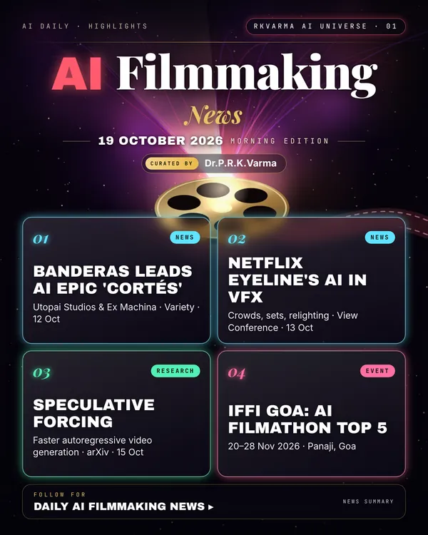

AI Filmmaking
Project page →2 minAI is moving from tests to features: Antonio Banderas will lead an AI-enabled epic, Netflix's Eyeline studio has shown how it uses AI in VFX, and HeyGen has opened a new video model to developers.
Research, industry & policy
- Banderas to star in AI-powered 'Cortés', Variety · 12 Oct 2026: Banderas plays Hernán Cortés in a feature from Utopai Studios and Ex Machina Studios that is built with AI tools.
- How Netflix's Eyeline uses AI in VFX, Variety · 13 Oct 2026: At the View Conference, Eyeline VP Mohsen Mousavi described AI for crowds, sets and relighting, along with new filmmaking tools in development.
- HeyGen Video model for developers, HeyGen docs · Oct 2026: Built on MiniMax H3 and post-trained by HeyGen, the model generates a whole scene (subject, setting and sound) in one call: text-to-video, image-to-video and reference-to-video.
- WIF India × Google Flow Filmathon (India), Women in Film India · announced 6 Oct 2026: Indian filmmakers aged 18+ make AI-assisted shorts of up to 5 minutes in Flow. Submissions close on 24 Oct, and the top five will be showcased at IFFI Goa.
Journals & preprints
- Speculative Forcing for efficient autoregressive video, arXiv 2610.22347 · 15 Oct 2026: Skips the final denoising step for tokens that already match their full-step output, which speeds up streaming video generation.
- Agentic physics-grounded video generation, arXiv 2610.23677 · 16 Oct 2026: A memory-augmented agent checks generated clips for physical errors and corrects them in context, rather than regenerating from scratch.
Conferences, workshops & events
- Formula E GEN4 Creators Challenge premiere, 22 Oct 2026 · BFI IMAX, London: The shortlisted AI-made films premiere on the UK's largest cinema screen.
- IFFI Goa 2026 (India), 20–28 Nov 2026 · Panaji, Goa: The 57th International Film Festival of India, where the top five Filmathon AI shorts will be shown.
- (UN)REAL AI Film Festival, 27–28 Nov 2026 · Feat. House, Turin: Entries close 31 Oct, and finalists are announced on 14 Nov.
- GenTO AI film festival, 5–6 Dec 2026 · Toronto: Generative-AI cinema.
- Türkiye International AI Film Festival (T-AIFF), 7–9 Dec 2026 · Istanbul: Applications close 1 Nov, and the pitching forum deadline is 15 Nov.
- AI Film Festival of Kerala (India), Kochi 2027 · entries open since 15 Oct 2026: India's AI film festival is now taking submissions.
Why it matters
Star talent and studio pipelines are now adopting AI, so questions about credits, consent and craft are moving from theory to contracts.

Was this section useful?